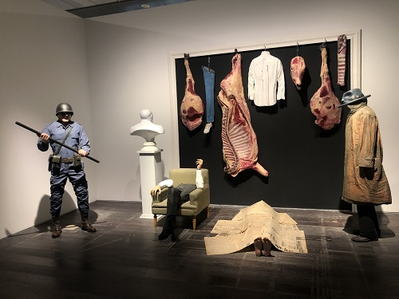

Carlos Alonso
1929
Recordar y “hacer memoria” es un proceso de aprendizaje, un fenómeno cultural expresado por individuos en un grupo social determinado. La importancia fundamental del recuerdo radica en su poder para definir la identidad y la conducta de un pueblo. La memoria tiene efectos actuales y determina la relación con el futuro. Si consideramos las producciones estéticas como prácticas de resistencia ante los intentos por eludir la elaboración de un pasado que nos devuelve la imagen de una comunidad quebrantada, se torna imperativo indagar y alentar la discusión pública a fin de fortalecer la ética social, dado que, de lo contrario “lo que se silencia no son tan sólo experiencias y hechos, sino dimensiones más profundas como valores, sentimientos e ideales (…) Persistir en el silencio deriva en la repetición, si no de su contenido, al menos de su estructura”.